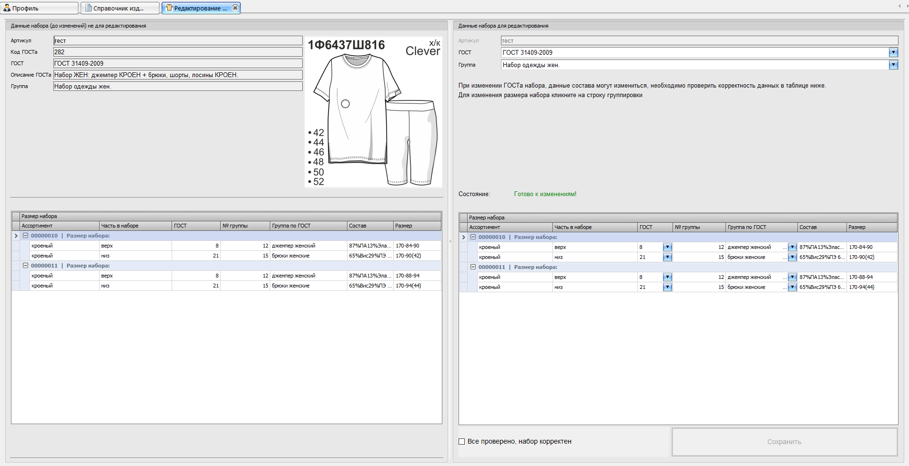

Редактирование набора
Форма предназначена для изменения состава набора изделия.
В левой части отображаются исходные данные набора до изменений.
Правая часть предназначена для редактирования новых данных.
Структура формы:
- Слева – данные набора до изменений, только для просмотра.
- Справа сверху – редактируемые поля набора: артикул, ГОСТ, группа.
- Справа снизу – редактируемый состав набора по размерам.
Порядок работы:
- Проверьте исходные данные слева.
- При необходимости измените ГОСТ и группу набора справа.
- Проверьте строки состава в нижней таблице.
- При изменении ГОСТа набора проверьте, что для всех строк корректно выбраны:
- ГОСТ состава
- группа по ГОСТу
- состав
- размер
- Для изменения размера набора нажмите на строку группировки в таблице состава.
- После проверки установите галочку "Все проверено, набор корректен".
- Нажмите "Сохранить" для перехода к следующему этапу.
Контроль состояния:
- В форме отображается текущее состояние проверки набора.
- Пока данные заполнены не полностью или содержат ошибки, сохранение недоступно.
- После успешной проверки отображается сообщение "Готово к изменениям!".
Дочерние формы:
-
Изменение данных в матрице –
открывается после сохранения изменений набора и позволяет выбрать наборы в матрице,
к которым будут применены изменения.
-
Изменение –
дочерняя форма редактирования динамических признаков части набора.
Открывается из формы матрицы.
